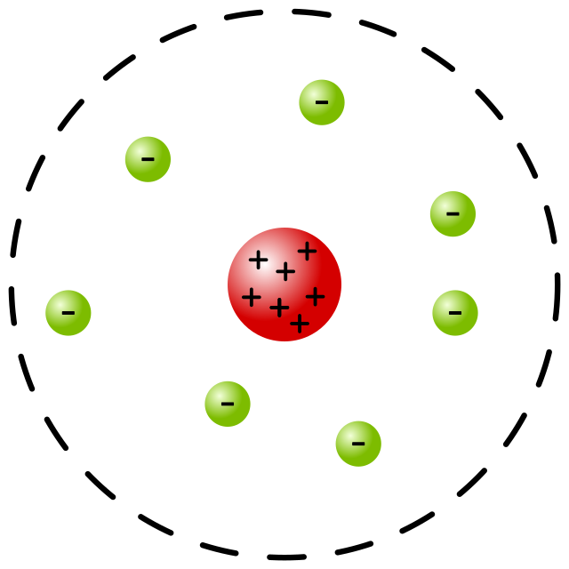

Dalton
O Modelo Atômico de Dalton apresenta as substâncias como sendo constituídas de pequenas partículas chamadas de átomos. O átomo proposto por Dalton seria uma partícula esférica, maciça e indivisível.
Nos seus postulados, o cientista afirmava que os átomos dos diferentes elementos têm distintas propriedades, mas todos os átomos do mesmo elemento são exatamente iguais.
Thomson
O experimento de J.J. Thomson sugeria que os elétrons situavam-se numa parte do átomo que apresentava carga positiva.
Desse modo, o átomo de Thomson teria o aspecto de ameixas em um pudim. Por esse motivo, o seu modelo, que surgiu por volta de 1898, ficou conhecido como o “modelo pudim de ameixa” ou “pudim com passas”.
Rutherford
O Modelo Atômico de Rutherford sugere que o átomo apresenta o aspecto de um sistema planetário. Por esse motivo ele é chamado de modelo planetário ou de modelo de átomo nucleado.
De acordo com esse modelo apresentado em 1911, os elétrons giram em torno do núcleo (formado por prótons e nêutrons), de forma semelhante aos planetas que giram à volta do Sol.
Bohr
O Modelo Atômico de Bohr apresenta o aspecto de órbitas onde existem elétrons e, no seu centro, um pequeno núcleo
O físico dinamarquês Niels Henry David Bohr (1885-1962) deu continuidade ao trabalho desenvolvido com Rutherford. Ele preencheu a lacuna que existia na teoria atômica proposta por Rutherford.